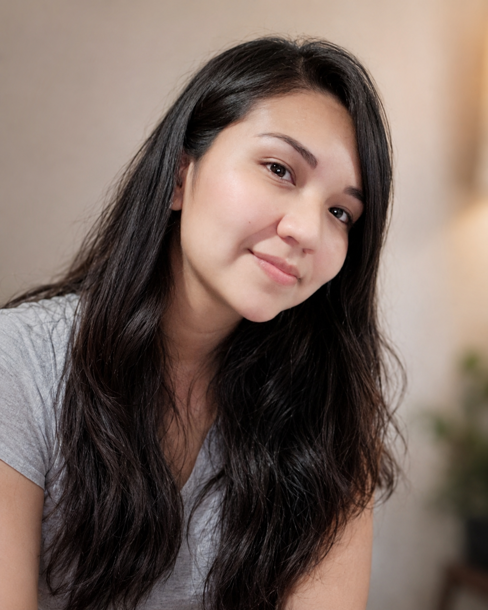

Mayumy Garcia

Mujer de gran encanto que dejó una huella importante
Mayumy apareció en mi vida en una etapa extraña, en esos años en los que el mundo todavía cargaba las consecuencias de COVID y viajar ya no se sentía tan simple como antes. Yo había ido a Lima preocupado por mi papá, que había decaído durante ese tiempo, y también venía de una relación que ya estaba deteriorada, una de esas historias que uno sabe que se están terminando aunque todavía no encuentre la forma de cerrarlas.
La conocí en medio de todo eso. Desde el principio me pareció muy simpática, atractiva y diferente. Tenía una presencia que llamaba la atención, una mezcla delicada en sus rasgos y una forma de ser que hacía fácil compartir tiempo con ella. Al comienzo salimos como amigos, pero la conexión avanzó rápido. Sin buscarlo demasiado, dejamos de ser solamente dos personas que se estaban conociendo y empezamos a construir algo más.
Fue también la primera vez que salía con una mujer que ya era mamá en Lima. Mayumy tenía un hijo, y eso me hizo ver muchas cosas desde otra perspectiva. Había una madurez distinta en su vida, responsabilidades que no eran solo suyas, y una manera de organizar el tiempo, el afecto y las prioridades que para mí era nueva. Aprendí bastante de esa relación, no solo sobre ella, sino también sobre mí.
Nuestra relación tuvo una energía muy intensa. Salíamos a bailar, a tomar, a conversar y a pasarla bien. Era una etapa joven, espontánea, de esas en las que uno todavía se deja llevar por el ritmo de la noche, por las risas, por los planes que no necesitan demasiada explicación. Con Mayumy había una química natural, una cercanía que se sentía fácil y una forma de compartir que hacía que el tiempo juntos tuviera algo especial.
Durante un tiempo pensé en presentarla a mi papá. Hicimos planes varias veces, pero por una u otra razón nunca se dio. La vida se fue atravesando con cambios, distancias y situaciones que hicieron que ese momento quedara pendiente. A veces hay cosas que uno cree que tendrá tiempo de hacer y, sin darse cuenta, se van quedando en el camino.
Mayumy conoció una parte muy grande de mi historia. Le había contado de mis experiencias anteriores, de relaciones que me habían marcado, de errores que había cometido y de muchas cosas que normalmente uno no comparte con cualquier persona. Ella sabía bastante de mi vida, de mis dudas y de mi pasado. Yo también llegué a conocer parte de su historia. Esa confianza hizo que nuestra relación no fuera solamente algo romántico o pasajero; había una cercanía real, construida a partir de conversaciones honestas y de una sensación de que ambos podíamos mostrarnos tal como éramos.
Pero las circunstancias comenzaron a complicarlo todo. La pandemia empeoró la distancia, los viajes se volvieron difíciles y la comunicación pasó a depender casi por completo de llamadas y mensajes. Poco a poco, lo que antes se sentía cercano empezó a enfriarse. A eso se sumó el hecho de que yo todavía no había cerrado del todo una relación anterior. Mayumy terminó contactando a esa persona y le dijo que entre nosotros estaba desarrollándose algo.
En ese momento sentí mucho enojo. Pensé que había provocado un daño que no le correspondía causar. Sin embargo, con los años entendí algo que antes me costaba reconocer: terminar esa relación anterior era mi responsabilidad, no la de ella. Yo debí haber sido claro, honesto y valiente antes de permitir que las cosas llegaran a ese punto. Esa fue una de las lecciones más duras que me dejó aquella etapa.
Después de un tiempo nos alejamos. Hubo desconfianza, dolor y cosas que ya no podían volver a sentirse igual. Pero aproximadamente un año más tarde volvimos a reconectar. Para entonces, muchas emociones ya habían bajado de intensidad y pudimos vernos desde otro lugar. La relación ya no era la misma, pero quedó una amistad que, aunque marcada por lo vivido, logró mantenerse.
Hoy seguimos siendo amigos. Mayumy ahora es madre nuevamente de un hermoso bebé, y eso nos da una conexión distinta porque yo también soy papá. Hay conversaciones que ahora se entienden de otra manera, desde las responsabilidades, el cansancio, la preocupación y el amor que implica cuidar a un hijo. La vida nos llevó por caminos distintos, pero no borró la importancia que tuvo en mi historia.
A veces pienso que, bajo otras circunstancias, tal vez lo nuestro pudo haber llegado a algo más. Tal vez sin la pandemia, sin la distancia y sin las decisiones mal manejadas, la historia habría tomado otra forma. Pero no todo lo que pudo ser está destinado a convertirse en algo. Algunas relaciones llegan para enseñarnos, para mostrarnos nuestras fallas y para dejarnos recuerdos que permanecen incluso cuando el vínculo cambia.
Mayumy marcó una etapa importante de mi vida. La recuerdo como una mujer simpática, atractiva, intensa y con una forma de estar presente que dejó huella en mí. Fue alguien con quien compartí momentos bonitos, aprendizajes difíciles y una parte de mi historia que todavía valoro.
Hoy la considero una gran amiga. Me gustaría que esa amistad se mantenga con el tiempo, porque a pesar de todo lo que pasó, hay personas que siguen siendo importantes no por cómo terminó una relación, sino por lo que dejaron en uno mientras estuvieron cerca. Mayumy es una de esas personas.